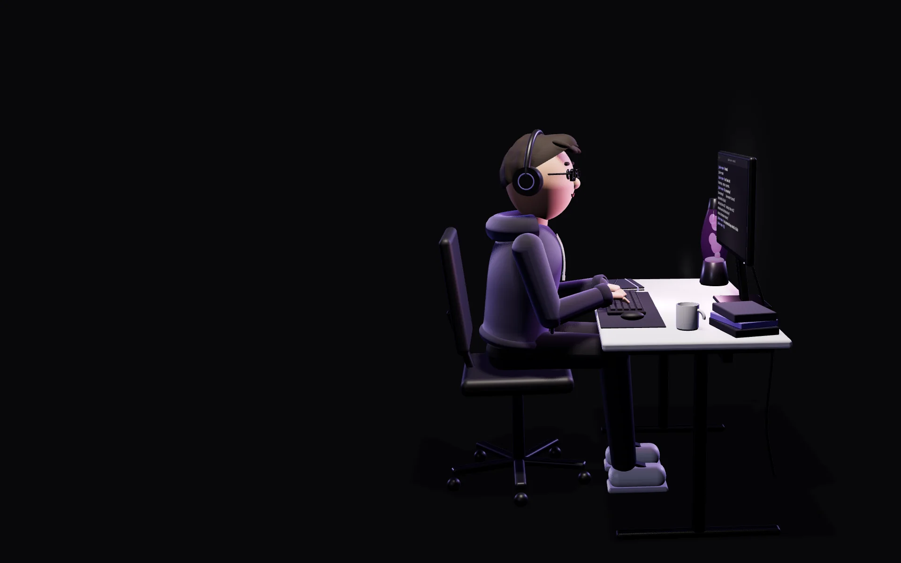

Ofensiva / Red Team
Pentesting · CTF
Pienso como el atacante para defender mejor. No espero el fallo: lo busco antes, en laboratorios controlados y retos CTF legales, y lo documento en informes técnicos.
Lo que uso

~$ whoami
Ciberseguridad · Sistemas · Redes
Estudiante del Grado en Ciberseguridad en ENTI-UB
~$ cat que-hago.txt
Me muevo entre tres áreas:
Pentesting · CTF
Pienso como el atacante para defender mejor. No espero el fallo: lo busco antes, en laboratorios controlados y retos CTF legales, y lo documento en informes técnicos.
Lo que uso
Linux · Windows Server · Proxmox · Cisco
Monto y mantengo la base sobre la que corre todo: servidores Linux y Windows, virtualización, contenedores y redes bien segmentadas.
Lo que uso
Python · PHP · Node.js
Programo herramientas que se usan de verdad, como un extractor de entropía que funciona con una lámpara de lava o la app de gestión que me encargó una profesora para una clínica dental.
Lo que uso
~$ cat ahora.txt
Grado en Ciberseguridad en ENTI-UB.
Es un título oficial de la Universitat de Barcelona, de cuatro años y 240 ECTS. Empecé en 2026 y, como me convalidaron parte del grado superior, este curso ya hago asignaturas de 1.º y 2.º.
Lo próximo que quiero construir: CyberOS
// trabajos
Proyectos reales, dentro y fuera del aula. En cada caso de estudio cuento qué problema había y cómo lo resolví.
La idea es la misma que usa Cloudflare: convertir el caos de una lámpara de lava en entropía. La mía funciona con una webcam y OpenCV, y tiene una regla: si la entropía no llega a 6,5 bits por byte, no se escribe nada.
Tienda online en Laravel con pagos por Stripe y una capa de seguridad hecha a mano. Es la otra mitad de Lava Entropy RNG.
Aplicación web para gestionar los pacientes y el personal de una clínica dental.
Informes técnicos de laboratorios de ciberseguridad y retos CTF.
Segundo volumen: escenarios de nivel intermedio-avanzado.
La infraestructura TIC completa de un coworking de tres plantas, de la red a la web. Proyecto en equipo.
El frontend de una app de asistencia y gestión, servido con Nginx en su propio contenedor Docker.
La próxima herramienta que quiero construir: un centro de mando de escritorio para ciberseguridad.
// mi historia
Cómo he llegado hasta aquí, en seis momentos.
01
Vivo entre Badalona y Premià de Mar. Familiar y cercano.
Me implico de verdad en lo que hago, no porque me lo exijan, sino porque así soy. En casa no soy el primero de la rama técnica (mi padre es ingeniero eléctrico), pero a la ciberseguridad llegué por mi cuenta.
02
Después del bachillerato, estaba perdido.
Los ordenadores siempre me habían llamado la atención, y la ciberseguridad más que nada. Al principio, lo reconozco, por los típicos estereotipos. Me gustaba investigar, cotillear y descubrir cómo funcionan las cosas. No la elegí por descarte: buscaba algo ambicioso, que cambiara siempre y no se volviera rutina.
03
Nadie me lo pidió. Lo hice igual.
El verano de 2024 trabajé en Mecalux (Cornellà), en un entorno industrial exigente, para ayudar a mi familia y pagarme los estudios. No fue un sacrificio: fue una decisión. Me enseñó a gestionar la presión, a priorizar y a no poner excusas cuando las cosas se complican.
04
Concentración máxima, adrenalina y disfrute al mismo tiempo.
Fue en 2025, en la CyberHack, una hackatón organizada por ENTI. Yo estaba en segundo del grado superior. Era una carrera contra el reloj: competir, pensar rápido y darlo todo. Esa sensación es la que me hace seguir aprendiendo fuera del horario.
05
Del grado superior a la universidad.
Hice el grado superior de ASIX (Administración de Sistemas Informáticos en Red) en IFP Barcelona, de 2024 a 2026, con la especialización en ciberseguridad, y las prácticas como técnico IT en Matrix DV. En 2026 empecé el Grado en Ciberseguridad en ENTI-UB. Me convalidaron asignaturas como Redes I, Bases de Datos o Introducción a la Ciberseguridad, así que este curso ya combino 1.º y 2.º.
06
Tecnología al servicio de las personas. No al revés.
Quiero construir herramientas reales que hagan el día a día de la gente más fácil y más seguro. Y tengo un lado de creador: en cinco años me veo con la carrera acabada, en una empresa con un reto que me motive y con algún proyecto propio en marcha.
// sobre mí
Si un compañero tuviera que describirme en tres palabras:
Desconectar bien es parte de conectar bien cuando toca.
Badalona / Premià de Mar
Disponible en zona Barcelona y en remoto
// formación
Desde 2026
ENTI-UB · centro adscrito a la Universitat de Barcelona
Título oficial de la UB, de cuatro años (240 ECTS). Este curso hago asignaturas de 1.º y 2.º gracias a las convalidaciones del ciclo.
2024–2026
IFP Barcelona
Administración de Sistemas Informáticos en Red, con especialización en ciberseguridad (Red Team y pentesting). Prácticas FCT como técnico IT en Matrix DV.
2021–2024
Instituto Mediterrània · El Masnou
Matrix DV · Barcelona
Mecalux · Cornellà de Llobregat
// contacto
Ahora mismo estoy abierto a todo: trabajo, prácticas o proyectos, en zona Barcelona o en remoto.
Busco un equipo donde aportar desde el primer día y crecer con gente que se toma en serio lo que hace. Si encaja con lo que tienes, escríbeme.